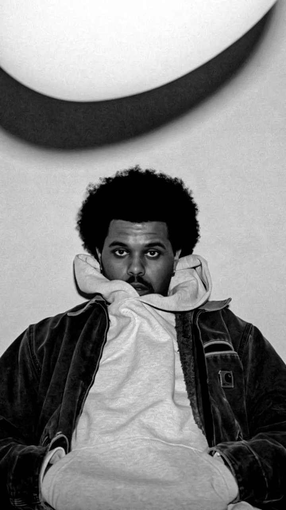
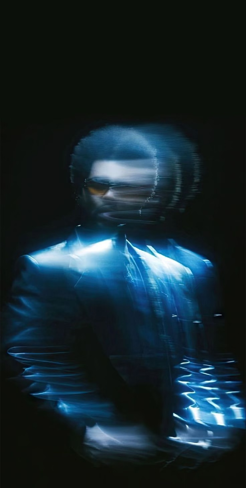
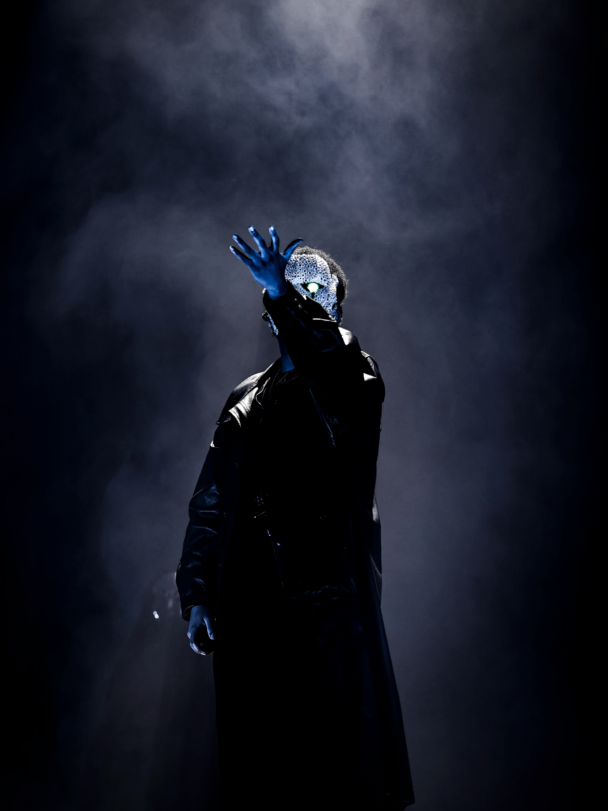

The Journey
I'm not a celebrity. I'm just a guy from Toronto who makes music in his bedroom and happens to be really, really good at it.

Mysterious Origins
Abel Makkonen Tesfaye began his journey anonymously in 2010, uploading songs to YouTube under the enigmatic name "The Weeknd." He avoided interviews and hid his face, letting the dark, hazy production and his distinctive falsetto voice speak for themselves.
His early mixtapes—*House of Balloons*, *Thursday*, and *Echoes of Silence*—quickly gained a cult following, blending R&B, electronic, and hip-hop into a unique, atmospheric sonic landscape that redefined the genre.

Mainstream Evolution
With the release of *Beauty Behind the Madness* and later *Starboy*, The Weeknd transitioned from underground mystery to global pop dominance. He started experimenting with upbeat synth-pop, massive collaborations (like Daft Punk), and a striking new visual identity.
Despite the mainstream success, his dark lyricism and themes of escapism and melancholia remained at the core of his music, creating a fascinating contrast with his radio-friendly beats.

Beyond Music
Never one to be boxed in, Abel expanded his universe into acting and television. Starring in and co-creating the controversial HBO series *The Idol*, he continued to explore the darker sides of fame and the music industry.
Today, The Weeknd stands as one of the most streamed artists in history, continuously pushing the boundaries of pop culture while staying true to his XO label roots.